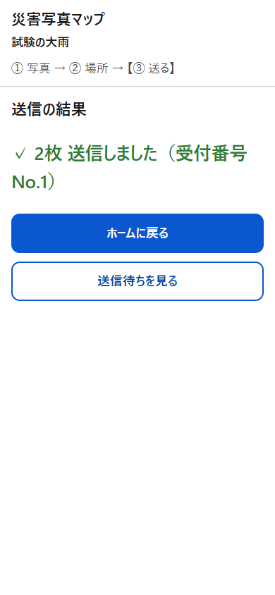

本番では、町のEssentials Starterのアカウントで新しく作ります。試しのスプレッドシート・写真・合言葉・パスワードは移しません。本番のウェブアプリのURLも新しくなります。
1 本番のGASを準備する
- 町の本番用Googleアカウントでログインします。
- 01 最初の設定の「1 記録用のスプレッドシートを作る」を行います。
- 同じ手引きの「2 最初の設定と許可をする」を行います。
- 本番用の合言葉を、町で決めた保管場所に控えます。
- 本番用の管理画面のパスワードを、町で決めた保管場所に控えます。
- 同じ手引きの「3 GASをウェブアプリとして公開する」を行います。
- 本番のウェブアプリのURLを控えます。
「アクセスできるユーザー」は「全員」です。選べない場合は町のアカウント管理担当に確認してください。
2 本番のページを公開する
- 試験を終えた配布フォルダを本番公開用に写します。
- 写した
docs/config.js を開きます。 gasUrl の値を、本番のウェブアプリのURLに差し替えます。docs/config.js を保存します。- 本番用のGitHubリポジトリを開きます。
- 同じ配布ファイルをアップロードします。
- 01 最初の設定の「4 投稿ページの公開先を準備する」に従って「/docs」を公開します。
- 本番の管理画面を開きます。
- 本番の管理画面のパスワードを入れます。
- 「ログイン」を押します。
変更する接続先は config.js の gasUrl だけです。秘密のメモ（合言葉・パスワード）はアップロードしません。試しの記録や写真もアップロードしません。
3 試しの受付と公開を止める
- 試しの管理画面を開きます。
- 「設定」を押します。
- 「受付を止める（合言葉も変える・おすすめ）」を押します。
- 「実行する」を押します。
- 試しのApps Scriptを開きます。
- 「デプロイ」を押します。
- 「デプロイを管理」を押します。
- 試しのデプロイを選びます。
- 「アーカイブ」を押します。
- 試しのGitHubリポジトリを開きます。
- 「Settings」を押します。
- 「Pages」を押します。
- 「Your site is live at」の横の、点が3つ並んだ操作ボタンを押します。
- 「Unpublish site」を押します。
町の運用に合わせて、試しのリポジトリを非公開にする方法でもかまいません。試しの写真と記録の保存・削除は町の決まりに従います。
4 本番で訓練を1件行う
- 本番の管理画面で地図の初期位置を確認します。
- 「設定」を押します。
- 「訓練を始める」を押します。
- 本番確認用の訓練名を入れます。
- 「この名前で始める」を押します。
- 「実行する」を押します。
- 本番の投稿用QRをスマホで読みます。
- 試しの写真を1枚送ります。
- 本番の管理画面に写真が出たことを確認します。
- 03 実機の確認表で本番の通信と端末を確認します。
- 本番の写真フォルダに写真が入ったことを確認します。
- 本番の「設定」を押します。
- 「受付を止める（合言葉も変える・おすすめ）」を押します。
- 「実行する」を押します。
確認の写真は訓練として残せます。表示から外す場合は、写真の詳細から「非表示にする」を使います。シートの行は消さず、写真の保存期間は町の決まりに従います。

スマホの送信結果と、本番の管理画面の両方で確認します。
5 本番のリンクに配り替える
- 本番の管理画面の「設定」を押します。
- 投稿用リンクの公開先が本番であることを確認します。
- 本番用のリンクとQRを担当者に配ります。
- 試しのリンクとQRを掲示物や連絡先から外します。
合言葉が変わるたびにリンク・QRも変わります。実際の災害で新しく受付を始めたときは、その時点のリンク・QRを配ってください。